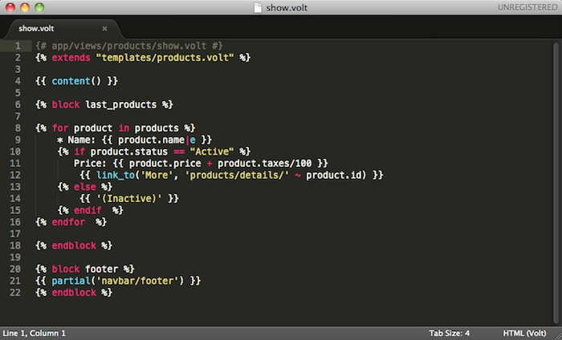

Содержание
Предыдущий раздел< Управление ресурсами (Assets Management) Следующий разделНа этой странице |
Шаблонизатор Volt¶Volt — ультрабыстрый и дружелюбный по отношению к дизайнеру язык шаблонизирования, написанный на C для PHP. Он предоставляет набор подручных средств, который позволит вам легко создавать представления. Volt очень сильно связан с остальными компонентами Phalcon, однако, вы можете использовать его в качестве самостоятельного компонента вашего приложения.

Volt был написан под вдохновлением от Jinja, который был создан Armin Ronacher. По этой причине многие разработчики будут чувствовать себя как дома, используя такой же синтаксис, что и в похожих шаблонизаторах. Возможности и синтаксис Volt были улучшены многими вещами и, конечно же, производительностью, к которым так привыкли разработчики, работая с Phalcon. Введение¶Представления на Volt компилируются в чистый PHP код, избавляя тем самым от необходимости писать его вручную: {# app/views/products/show.volt #}
{% block last_products %}
{% for product in products %}
* Name: {{ product.name|e }}
{% if product.status == "Active" %}
Price: {{ product.price + product.taxes/100 }}
{% endif %}
{% endfor %}
{% endblock %}
Подключение Volt¶Вы можете подключить Volt в компоненте представлений как любой другой шаблонизатор, используя при этом новое расширение для файлов, или всё то же стандартное .phtml: <?php
//Registering Volt as template engine
$di->set('view', function() {
$view = new \Phalcon\Mvc\View();
$view->setViewsDir('../app/views/');
$view->registerEngines(array(
".volt" => 'Phalcon\Mvc\View\Engine\Volt'
));
return $view;
});
Использование стандартного расширения ”.phtml”: <?php
$view->registerEngines(array(
".phtml" => 'Phalcon\Mvc\View\Engine\Volt'
));
Основы¶Представление состоит из Volt кода, PHP и HTML. Набор специальных разделителей позволяет входить в режим Volt. Разделители {% ... %} используются для выполнения операторов, таких как циклы for и присваивания, а {{ ... }} выводит результат выражения в шаблон. Ниже представлен небольшой шаблон, иллюстрирующий эти основные возможности: {# app/views/posts/show.phtml #}
<!DOCTYPE html>
<html>
<head>
<title>{{ title }} - A example blog</title>
</head>
<body>
{% if show_navigation %}
<ul id="navigation">
{% for item in menu %}
<li><a href="{{ item.href }}">{{ item.caption }}</a></li>
{% endfor %}
</ul>
{% endif %}
<h1>{{ post.title }}</h1>
<div class="content">
{{ post.content }}
</div>
</body>
</html>
Используя Phalcon\Mvc\View::setVar вы можете передать переменные из контроллера в представление. В предыдущем примере это были три переменные: title, menu и post: <?php
class PostsController extends \Phalcon\Mvc\Controller
{
public function showAction()
{
$post = Post::findFirst();
$this->view->setVar("title", $post->title);
$this->view->setVar("post", $post);
// или
$this->view->menu = Menu::find();
$this->view->show_navigation = true;
}
}
Переменные¶Переменные могут иметь аттрибуты, доступные при использовании синтаксиса: foo.bar. Если вы передаёте массивы, то обратиться к их элементам можно посредством квадратных скобок: foo[‘bar’] {{ post.title }}
{{ post['title'] }}
Фильтры¶Вывод переменных можно форматировать или модифицировать при помощи фильтров. Для их применения используется оператор | (вертикальная черта): {{ post.title|e }}
{{ post.content|striptags }}
{{ name|capitalize|trim }}
Список встроенных в Volt фильтров:
Примеры: {# e или escape #}
{{ "<h1>Hello<h1>"|e }}
{{ "<h1>Hello<h1>"|escape }}
{# trim #}
{{ " hello "|trim }}
{# striptags #}
{{ "<h1>Hello<h1>"|striptags }}
{# slashes #}
{{ "'this is a string'"|slashes }}
{# stripslashes #}
{{ "\'this is a string\'"|stripslashes }}
{# capitalize #}
{{ "hello"|capitalize }}
{# lower #}
{{ "HELLO"|lower }}
{# upper #}
{{ "hello"|upper }}
{# length #}
{{ "robots"|length }}
{{ [1, 2, 3]|length }}
{# nl2br #}
{{ "some\ntext"|nl2br }}
{# sort filter #}
{% set sorted=[3, 1, 2]|sort %}
{# keys filter #}
{% set keys=['first': 1, 'second': 2, 'third': 3]|keys %}
{# json_encode filter #}
{% robots|json_encode %}
{# json_decode filter #}
{% set decoded='{"one":1,"two":2,"three":3}'|json_decode %}
{# url_encode filter #}
{{ post.permanent_link|url_encode }}
{# convert_encoding filter #}
{{ "désolé"|convert_encoding('utf8', 'latin1') }}
Комментарии¶В шаблон можно добавить комментарии, используя разделители {# ... #}. Любой текст внутри них будет проигнорирован и не попадёт в вывод: {# note: this is a comment
{% set price = 100; %}
#}
Список управляющих конструкций¶Volt позволяет использовать в шаблонах набор основных, но мощных управляющих структур: For¶Цикл по всем элементам в последовательности. Пример ниже показывает, как пройти по набору “robots” и вывести их имена: <h1>Robots</h1>
<ul>
{% for robot in robots %}
<li>{{ robot.name|e }}</li>
{% endfor %}
</ul>
циклы так же могут быть вложенными: <h1>Robots</h1>
{% for robot in robots %}
{% for part in robot.parts %}
Robot: {{ robot.name|e }} Part: {{ part.name|e }} <br/>
{% endfor %}
{% endfor %}
Вы можете получить ключи значений массива так же, как и в PHP используя такой синтаксис: {% set numbers = ['one': 1, 'two': 2, 'three': 3] %}
{% for name, value in numbers %}
Name: {{ name }} Value: {{ value }}
{% endfor %}
Кроме того для выборочного прохода по элементам, можно определить условие “if”: {% set numbers = ['one': 1, 'two': 2, 'three': 3] %}
{% for value in numbers if value < 2 %}
Value: {{ value }}
{% endfor %}
{% for name, value in numbers if name != 'two' %}
Name: {{ name }} Value: {{ value }}
{% endfor %}
Если ‘else’ определяется внутри ‘for’, то этот блок будет выполнен в том случае, когда не будет произведено ни одной итерации: <h1>Robots</h1>
{% for robot in robots %}
Robot: {{ robot.name|e }} Part: {{ part.name|e }} <br/>
{% else %}
There are no robots to show
{% endfor %}
Альтернативный синтаксис: <h1>Robots</h1>
{% for robot in robots %}
Robot: {{ robot.name|e }} Part: {{ part.name|e }} <br/>
{% elsefor %}
There are no robots to show
{% endfor %}
Управление циклами¶Такие операторы как ‘break’ and ‘continue’ могут быть использованы для выхода из цикла вообще, или перехода к следующей итерации: {# пропустить робота с четным индексом #}
{% for index, robot in robots %}
{% if index is even %}
{% continue %}
{% endif %}
...
{% endfor %}
{# выход из цикла при первом встреченном четном роботе #}
{% for index, robot in robots %}
{% if index is even %}
{% break %}
{% endif %}
...
{% endfor %}
If¶Как и в PHP оператор “if” проверяет значение выражения на ложь или истину: <h1>Cyborg Robots</h1>
<ul>
{% for robot in robots %}
{% if robot.type == "cyborg" %}
<li>{{ robot.name|e }}</li>
{% endif %}
{% endfor %}
</ul>
Условие else тоже поддерживается: <h1>Robots</h1>
<ul>
{% for robot in robots %}
{% if robot.type == "cyborg" %}
<li>{{ robot.name|e }}</li>
{% else %}
<li>{{ robot.name|e }} (not a cyborg)</li>
{% endif %}
{% endfor %}
</ul>
Структура “elseif” может быть использована совместно с “if” для повторения функционала “switch”: {% if robot.type == "cyborg" %}
Robot is a cyborg
{% elseif robot.type == "virtual" %}
Robot is virtual
{% elseif robot.type == "mechanical" %}
Robot is mechanical
{% endif %}
Контекст цикла¶Внутри цикла ‘for’ доступна специальная переменная, предоставляющая информацию о нём
{% for robot in robots %}
{% if loop.first %}
<table>
<tr>
<th>#</th>
<th>Id</th>
<th>Name</th>
</tr>
{% endif %}
<tr>
<td>{{ loop.index }}</td>
<td>{{ robot.id }}</td>
<td>{{ robot.name }}</td>
</tr>
{% if loop.last %}
</table>
{% endif %}
{% endfor %}
Присваивания¶Переменные могут быть изменены в шаблоне. для этого используется оператор “set”: {% set fruits = ['Apple', 'Banana', 'Orange'] %}
{% set name = robot.name %}
Multiple assignments are allowed in the same instruction: {% set fruits = ['Apple', 'Banana', 'Orange'], name = robot.name, active = true %}
Additionally, you can use compound assignment operators: {% set price += 100.00 %}
{% set age *= 5 %}
The following operators are available:
Выражения¶Volt позволяет использовать базовый набор выражений, включая литералы. Выражения вычисляются и выводятся с использованием разделителей ‘{{‘ и ‘}}’: {{ (1 + 1) * 2 }}
If an expression needs to be evaluated without be printed the ‘do’ statement can be used: {% do (1 + 1) * 2 %}
Литералы¶Поддерживаются следующие литералы:
Массивы¶Если вы используете PHP 5.3 or 5.4, 5.5, то можете создавать массивы, перечисляя список значений в квадратных скобках: {# Простой массив #}
{{ ['Apple', 'Banana', 'Orange'] }}
{# Еще один простой массив #}
{{ ['Apple', 1, 2.5, false, null] }}
{# Многомерный массив #}
{{ [[1, 2], [3, 4], [5, 6]] }}
{# Хэш-массив #}
{{ ['first': 1, 'second': 4/2, 'third': '3'] }}
Curly braces also can be used to define arrays or hashes: {% set myArray = {'Apple', 'Banana', 'Orange'} %}
{% set myHash = {'first': 1, 'second': 4/2, 'third': '3'} %}
Математические операторы¶Вы можете производить вычисления в шаблонах, используя следующие операторы:
Операторы сравнения¶Доступны следующие операторы сравнения:
Логические операторы¶Логические операторы полезны в выражении “if” чтобы объединить несколько проверок:
Другие операторы¶Доступны так же дополнительные операторы:
Пример ниже показывает их использование: {% set robots = ['Voltron', 'Astro Boy', 'Terminator', 'C3PO'] %}
{% for index in 0..robots|length %}
{% if robots[index] is defined %}
{{ "Name: " ~ robots[index] }}
{% endif %}
{% endfor %}
Проверки¶Проверки могут быть использованы для определения соответствия переменной какому-то ожидаемому значению. Оператор “is” используется для выполнения проверок: {% set robots = ['1': 'Voltron', '2': 'Astro Boy', '3': 'Terminator', '4': 'C3PO'] %}
{% for position, name in robots %}
{% if position is odd %}
{{ name }}
{% endif %}
{% endfor %}
The following built-in tests are available in Volt:
Больше примеров: {% if robot is defined %}
The robot variable is defined
{% endif %}
{% if robot is empty %}
The robot is null or isn't defined
{% endif }
{% for key, name in [1: 'Voltron', 2: 'Astroy Boy', 3: 'Bender'] %}
{% if key is even %}
{{ name }}
{% endif }
{% endfor %}
{% for key, name in [1: 'Voltron', 2: 'Astroy Boy', 3: 'Bender'] %}
{% if key is odd %}
{{ name }}
{% endif }
{% endfor %}
{% for key, name in [1: 'Voltron', 2: 'Astroy Boy', 'third': 'Bender'] %}
{% if key is numeric %}
{{ name }}
{% endif }
{% endfor %}
{% set robots = [1: 'Voltron', 2: 'Astroy Boy'] %}
{% if robots is iterable %}
{% for robot in robots %}
...
{% endfor %}
{% endif %}
{% set world = "hello" %}
{% if world is sameas("hello") %}
{{ "it's hello" }}
{% endif %}
{% set external = false %}
{% if external is type('boolean') %}
{{ "external is false or true" }}
{% endif %}
Macros¶Макросы могут быть использованы для избежания повторений в шаблоне, они действуют как функции PHP, они могут получать параметры и возвращать значения: {# Макрос "Вывода списка ссылок на похожие темы" #}
{%- macro related_bar(related_links) %}
<ul>
{%- for link in related_links %}
<li><a href="{{ url(link.url) }}" title="{{ link.title|striptags }}">{{ link.text }}</a></li>
{%- endfor %}
</ul>
{%- endmacro %}
{# Используем макрос "Вывода списка ссылок на пожие темы" #}
{{ related_bar(links) }}
<div>This is the content</div>
{# Используем макрос "Вывода списка ссылок на похожие темы" снова #}
{{ related_bar(links) }}
При использовании макросов, параметры могут быть переданы по имени: {%- macro error_messages(message, field, type) %}
<div>
<span class="error-type">{{ type }}</span>
<span class="error-field">{{ field }}</span>
<span class="error-message">{{ message }}</span>
</div>
{%- endmacro %}
{# Использование макроса #}
{{ error_messages('type': 'Invalid', 'message': 'The name is invalid', 'field': 'name') }}
Макросы могут возвращать значения: {%- macro my_input(name, class) %}
{% return text_field(name, 'class': class) %}
{%- endmacro %}
{# Использование макроса #}
{{ '<p>' ~ my_input('name', 'input-text') ~ '</p>' }}
И задавать параметры по умолчанию: {%- macro my_input(name, class="input-text") %}
{% return text_field(name, 'class': class) %}
{%- endmacro %}
{# Использование макроса#}
{{ '<p>' ~ my_input('name') ~ '</p>' }}
{{ '<p>' ~ my_input('name', 'input-text') ~ '</p>' }}
Использование Tag Helpers¶Volt сильно связан с Phalcon\Tag, поэтому можно легко использовать в Volt-шаблонах helpers, предоставляемые этим компонентом: {{ javascript_include("js/jquery.js") }}
{{ form('products/save', 'method': 'post') }}
<label>Name</label>
{{ text_field("name", "size": 32) }}
<label>Type</label>
{{ select("type", productTypes, 'using': ['id', 'name']) }}
{{ submit_button('Send') }}
</form>
В результате будет сгенерирован следующий PHP-код: <?php echo Phalcon\Tag::javascriptInclude("js/jquery.js") ?>
<?php echo Phalcon\Tag::form(array('products/save', 'method' => 'post')); ?>
<label>Name</label>
<?php echo Phalcon\Tag::textField(array('name', 'size' => 32)); ?>
<label>Type</label>
<?php echo Phalcon\Tag::select(array('type', $productTypes, 'using' => array('id', 'name'))); ?>
<?php echo Phalcon\Tag::submitButton('Send'); ?>
</form>
Для вызова PhalconTag helper, вам необходимо лишь вызвать соответсвующие версии методов не в Camelcase:
Функции¶В Volt доступны перечисленные ниже встроенные функции:
Связывание с представлениями¶Кроме того, Volt связан с Phalcon\Mvc\View, что позволяет вам поиграться с иерархией и включением partials: {{ content() }}
<!-- Simple include of a partial -->
<div id="footer">{{ partial("partials/footer") }}</div>
<!-- Passing extra variables -->
<div id="footer">{{ partial("partials/footer", ['links': $links]) }}</div>
Partial включается в момент выполнения, Volt так же предоставляет “include”, которая собирает содержимое представления и возвращает его в виде включаемой части: {# Simple include of a partial #}
<div id="footer">{% include "partials/footer" %}</div>
{# Passing extra variables #}
<div id="footer">{% include "partials/footer" with ['links': links] %}</div>
Include¶‘include’ has a special behavior that will help us improve performance a bit when using Volt, if you specify the extension when including the file and it exists when the template is compiled, Volt can inline the contents of the template in the parent template where it’s included. Templates aren’t inlined if the ‘include’ have variables passed with ‘with’: {# The contents of 'partials/footer.volt' is compiled and inlined #}
<div id="footer">{% include "partials/footer.volt" %}</div>
Наследование шаблонов¶С помощью наследования шаблонов вы можете создавать базовые шаблоны, которые могут быть расширены другими шаблонами, что позволит повторно использовать уже написанный код. Базовый шаблон определяет блоки, которые могут быть переопределены дочерними шаблонами. Предположим, что у нас есть некоторый базовый шаблон: {# templates/base.volt #}
<!DOCTYPE html>
<html>
<head>
{% block head %}
<link rel="stylesheet" href="style.css" />
{% endblock %}
<title>{% block title %}{% endblock %} - My Webpage</title>
</head>
<body>
<div id="content">{% block content %}{% endblock %}</div>
<div id="footer">
{% block footer %}© Copyright 2012, All rights reserved.{% endblock %}
</div>
</body>
</html>
Заменяя блоки, мы расширим базовый шаблон другим: {% extends "templates/base.volt" %}
{% block title %}Index{% endblock %}
{% block head %}<style type="text/css">.important { color: #336699; }</style>{% endblock %}
{% block content %}
<h1>Index</h1>
<p class="important">Welcome on my awesome homepage.</p>
{% endblock %}
Не обязательно заменять все блоки дочерними шаблонами, можно только те, которые необходимо. В результате, вывод будет таким: <!DOCTYPE html>
<html>
<head>
<style type="text/css">.important { color: #336699; }</style>
<title>Index - My Webpage</title>
</head>
<body>
<div id="content">
<h1>Index</h1>
<p class="important">Welcome on my awesome homepage.</p>
</div>
<div id="footer">
© Copyright 2012, All rights reserved.
</div>
</body>
</html>
Множественное наследование¶Шаблоны, которые наследуют другие шаблоны, так же могут быть унаследованы. Это иллюстрирует следующий пример: {# main.volt #}
<!DOCTYPE html>
<html>
<head>
<title>Title</title>
</head>
<body>
{% block content %}{% endblock %}
</body>
</html>
Шаблон “layout.volt” наследует “main.volt” {# layout.volt #}
{% extends "main.volt" %}
{% block content %}
<h1>Table of contents</h1>
{% endblock %}
Финальное представление, наследующее “layout.volt”: {# index.volt #}
{% extends "layout.volt" %}
{% block content %}
{{ super() }}
<ul>
<li>Some option</li>
<li>Some other option</li>
</ul>
{% endblock %}
Отрисовка “index.volt”: <!DOCTYPE html>
<html>
<head>
<title>Title</title>
</head>
<body>
<h1>Table of contents</h1>
<ul>
<li>Some option</li>
<li>Some other option</li>
</ul>
</body>
</html>
Обратите внимание на вызов функции “super()”. Эта функция позволяет отрисовать содержимое родительского блока. Как и partials, путь, установленный в “extends” — это путь относительно текущей папки с представлениями (т.е. app/views/).
Режим автоматического экранирования¶Вы можете включить режим автоматического экранирования всех выводимых в блоке переменных: Manually escaped: {{ robot.name|e }}
{% autoescape true %}
Autoescaped: {{ robot.name }}
{% autoescape false %}
No Autoescaped: {{ robot.name }}
{% endautoescape %}
{% endautoescape %}
Настройка шаблонизатора Volt¶Volt можно настроить так, чтобы изменить его поведение по умолчанию. В следующем примере объясняется, как это можно сделать: <?php
use Phalcon\Mvc\View,
Phalcon\Mvc\View\Engine\Volt;
//Register Volt as a service
$di->set('voltService', function($view, $di) {
$volt = new Volt($view, $di);
$volt->setOptions(array(
"compiledPath" => "../app/compiled-templates/",
"compiledExtension" => ".compiled"
));
return $volt;
});
//Register Volt as template engine
$di->set('view', function() {
$view = new View();
$view->setViewsDir('../app/views/');
$view->registerEngines(array(
".volt" => 'voltService'
));
return $view;
});
Если вы не хотите использовать Volt в качестве сервиса, вы можете передать при регистрации шаблонизатора анонимную функцию, вместо имени сервиса: <?php
// Регистрация Volt в качестве шаблонизатора с анонимной функцией
$di->set('view', function() {
$view = new \Phalcon\Mvc\View();
$view->setViewsDir('../app/views/');
$view->registerEngines(array(
".volt" => function($view, $di) {
$volt = new \Phalcon\Mvc\View\Engine\Volt($view, $di);
// тут установка каких-то настроек
return $volt;
}
));
return $view;
});
В Volt могут быть следующие опции:
The compilation path is generated according to the above options, if the developer wants total freedom defining the compilation path, an anonymous function can be used to generate the compilation path, this function receives the relative path to the template in the views directory. The following examples show how to change the compilation path dynamically: <?php
// Just append the .php extension to the template path
// leaving the compiled templates in the same directory
$volt->setOptions(array(
'compiledPath' => function($templatePath) {
return $templatePath . '.php';
}
));
// Recursively create the same structure in another directory
$volt->setOptions(array(
'compiledPath' => function($templatePath) {
$dirName = dirname($templatePath);
if (!is_dir('cache/' . $dirName)) {
mkdir('cache/' . $dirName);
}
return 'cache/' . $dirName . '/'. $templatePath . '.php';
}
));
Расширение Volt¶В отличие от других шаблонизаторов, Volt не требуется для запуска скомпилированных шаблонов. После того, как шаблон был собран, он больше никак не зависит от Volt. Иными словами, он используется лишь в качестве компилятора для PHP-шаблонов. Volt-компилятор позволяет вам расширить его, добавив больше функций, проверки или фильтр к уже существующим. Функции¶Функции действуют как обычные PHP-функции, поэтому им требуется строковое имя, разрешенное для функций в PHP. Функции можно добавить двумя способами: передать простое строчное имя, или использовать анонимную функцию. Любой способ должен возращать допустимое PHP-выражение. <?php
$volt = new \Phalcon\Mvc\View\Engine\Volt($view, $di);
$compiler = $volt->getCompiler();
// Тут к функции 'shuffle' в Volt привязывается PHP-функция 'str_shuffle'
$compiler->addFunction('shuffle', 'str_shuffle');
При регистрации функции, как анонимной, мы используем $resolvedArgs для передачи аргументов точно так же, как они были приняты: <?php
$compiler->addFunction('widget', function($resolvedArgs, $exprArgs) {
return 'MyLibrary\Widgets::get('.$resolvedArgs.')';
});
Учитывайте, что параметры независимы или не переданы: <?php
$compiler->addFunction('repeat', function($resolvedArgs, $exprArgs) use ($compiler) {
// Получение первого параметра
$firstArgument = $compiler->expression($exprArgs[0]['expr']);
// Проверка, что второй параметр был передан
if (isset($exprArgs[1])) {
$secondArgument = $compiler->expression($exprArgs[1]['expr']);
} else {
// По умолчанию используется '10'
$secondArgument = '10';
}
return 'str_repeat(' . $firstArgument . ', ' . $secondArgument . ')';
});
Генерация кода на основе некоторой готовой функции: <?php
$compiler->addFunction('contains_text', function($resolvedArgs, $exprArgs) {
if (function_exists('mb_stripos')) {
return 'mb_stripos(' . $resolvedArgs . ')';
} else {
return 'stripos(' . $resolvedArgs . ')';
}
});
Встроенные функции могут быть перегружены добавлением функций с таким же именем: <?php
// Заменяет встроенную функцию 'dump'
$compiler->addFunction('dump', 'print_r');
Фильтры¶Фильтры имеют следующий вид в шаблоне: leftExpr|name(optional-args). Добавление новых фильтров аналогично добавлению функций: <?php
// Создаёт фильтр 'hash', который использует функцию PHP 'md5'
$compiler->addFilter('hash', 'md5');
<?php
$compiler->addFilter('int', function($resolvedArgs, $exprArgs) {
return 'intval(' . $resolvedArgs . ')';
});
Встроенные фильтры могут быть перегружены добавлением фильтра с таким же именем: <?php
//Replace built-in filter 'capitalize'
$compiler->addFilter('capitalize', 'lcfirst');
Extensions¶With extensions the developer has more flexibility to extend the template engine, and override the compilation of a specific instruction, change the behavior of an expression or operator, add functions/filters, and more. An extension is a class that implements the events triggered by Volt as a method of itself. For example, the class below allows to use any PHP function in Volt: <?php
class PhpFunctionExtension
{
/**
* This method is called on any attempt to compile a function call
*/
public function compileFunction($name, $arguments)
{
if (function_exists($name)) {
return $name . '('. $arguments . ')';
}
}
}
The above class implements the method ‘compileFunction’ which is invoked before any attempt to compile a function call in any template. The purpose of the extension is to verify if a function to be compiled is a PHP function allowing to call it from the template. Events in extensions must return valid PHP code, this will be used as result of the compilation instead of the one generated by Volt. If an event doesn’t return an string the compilation is done using the default behavior provided by the engine. The following compilation events are available to be implemented in extensions:
Volt extensions must be in registered in the compiler making them available in compile time: <?php
//Register the extension in the compiler
$compiler->addExtension(new PhpFunctionExtension());
Кэширование частей представления¶С помощью Volt легко можно кэшировать части представления. Это повышает производительность, предотвращая выполнение PHP содержимого блока каждый раз, когда он отображается: {% cache "sidebar" %}
<!-- generate this content is slow so we are going to cache it -->
{% endcache %}
Установка времени жизни кэша на определённое количество секунд: {# кэширование сайдбара на 1 час #}
{% cache "sidebar" 3600 %}
<!-- генерация этого содержимого достаточно медленна и мы решили её закэшировать -->
{% endcache %}
В качестве ключа кэша может быть использовано любое разрешённое выражение: {% cache ("article-" ~ post.id) 3600 %}
<h1>{{ post.title }}</h1>
<p>{{ post.content }}</p>
{% endcache %}
Кэширование выполняется компонентом Phalcon\Cache через компонент представления. Узнать больше о том, как это работает можно в разделе “Caching View Fragments”. Использование сервисов в шаблоне¶Если контейнер сервисов (DI) доступен для Volt, вы можете использовать сервисы в шаблоне, получая доступ к ним по их именам: {# Использование сервиса 'flash' #}
<div id="messages">{{ flash.output() }}</div>
{# Использование сервиса 'security' #}
<input type="hidden" name="token" value="{{ security.getToken() }}">
Отдельный компонент¶Ниже продемонстрировано использование Volt, как отдельного компонента: <?php
// Создание компилятора
$compiler = new \Phalcon\Mvc\View\Engine\Volt\Compiler();
// Добавление каких-то опций
$compiler->setOptions(array(
//...
));
// Компиляция шаблона-строки, возвращающая PHP-код
echo $compiler->compileString('{{ "hello" }}');
// Компиляция шаблона-файла в определённый файл
$compiler->compileFile('layouts/main.volt', 'cache/layouts/main.volt.php');
// Компиляция шаблона-файла, в файл, определённый в настройках, переданных в компилятор
$compiler->compile('layouts/main.volt');
// Запрос собранных шаблонов (по желанию)
require $compiler->getCompiledTemplatePath();
Внешние ресурсы¶
|